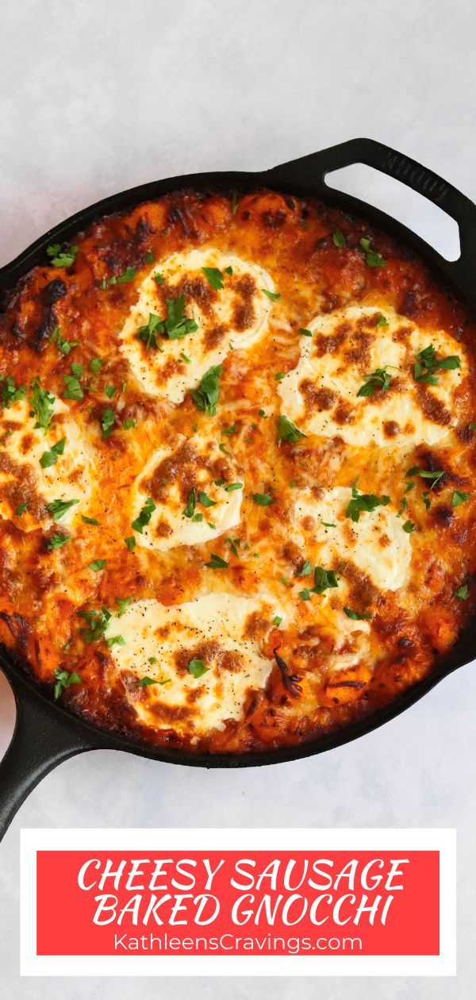

Home
Baked Meatball Gnocci

Description:
Cheesy Sausage Baked Gnocchi is the perfect easy weeknight dinner. Loaded with comforting Italian flavors and made in under 45 minutes with less than 10 minutes of hands on time. Only one pan or skillet dinner for an easy clean up.
Ingredients:
- 1 tbsp Olive Oil
- 1 lb Italian Sausage
- 1 tbsp minced Garlic
- 2 1lb packages of Gnocchi
- 1/4 cup Heavy Cream
- 1 tsp Kosher Salt
- 1 tsp Fennel Seeds
- 1 tsp Basil, Dried
- 1 tsp Oregano, Dried
- 1 tsp Parsley, Dried
- 1/4 - 1/2 tsp Red Pepper Flakes, optional for additional spice
- 1 24oz jar Marinara Sauce
- 8oz Mozarella Cheese, shredded or fresh slices or a combo
- 1 tbsp Parsley, Fresh
Steps
- Preheat Oven. Preheat oven to 400 degrees F
- Cook Sausage. In a large ovenproof skillet, heat the oil over medium-high heat. Add the sausage and brown/crumble until it is cooked through, about 5 minutes. Lower heat to low-medium and add the minced garlic. Sauté for an additional minute until fragrant. Remove from heat.
- Assemble Gnocchi Bake. In same skillet or transfer to a baking dish, add the gnocchi, marinara, cream, and spices to the sausage and stir to combine. Press into an even layer. Top with cheese.
- Bake. Bake in preheated oven for about 30 minutes, until gnocchi is tender, sauce is bubbling around the edges and cheese is melted and slightly browned. If the cheese is browning too quickly, you can loosely tent with foil.
- Serve and Enjoy. Allow to cool for 10 minutes before serving. Top with fresh parsley and enjoy.